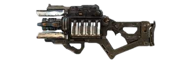
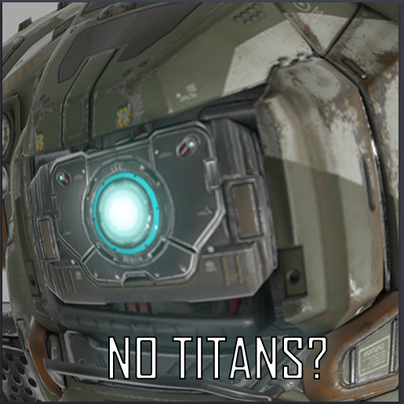

Titanfall 2, est un fps multijoueur/solo;coop/PvP/ dans un univers futuriste en plein dans une guerre,
Les joueurs, dispose d'arme futuriste (comme ce fcking cannon laser)
ou des mécha de tout type

Développer par respawn entertainment c'est grace a lui que apex existe.
Il est laisser a l'abandond a cause de l'empire du mal (EA).
Titanfall a été victime de ddos a cause de de joueur qui rejoignais la partie avec trop de caract. dans leur nom (faille la + simple a corriger)
MAIS qu'a fait respawn/EA pour sauver le jeu?
RIEN rien du tout il on laisser le jeu crever et on préférer la thune avec apex.
PIRE! il continue a vendre le jeux!

NORTHSTAR ! un "mod" qui permet de se co sur des serveur de la commu
ET de rajouter: des skin, des mode de jeux !
MAIS bien évidament les personne que j'ai fortemment envie d'insulter, continue a DDOS les serveur (car on ne peut pas fix la faille)
Le lien du site de northstar est ICI
j'ai bien aimer la campagne solo et son caractère principal (cooper)
ainsi que certaine phase du jeu
Les boss était pas mal (meme si j'ai défoncé viper et ash first try lol )